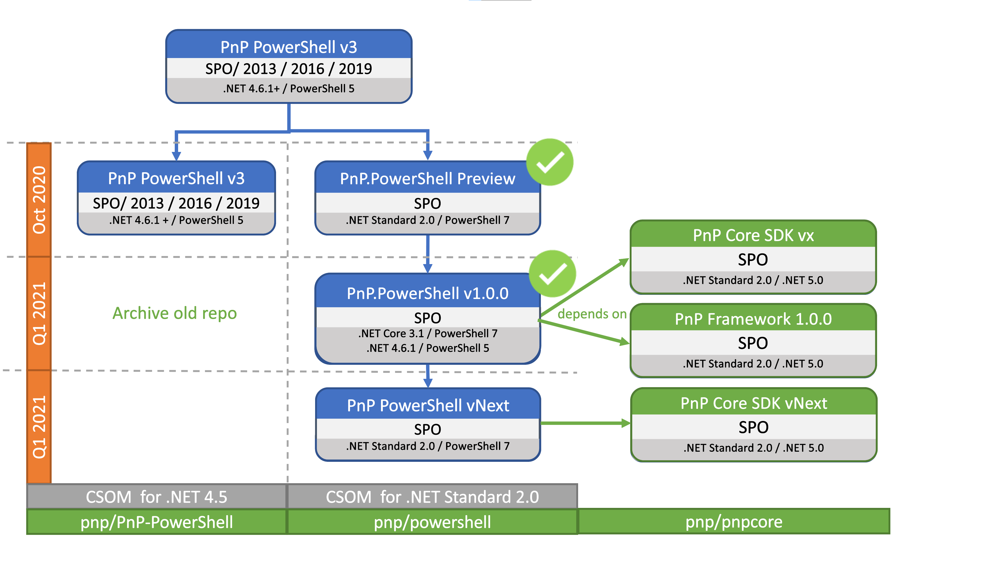

PnP PowerShell
PnP PowerShell is a .NET Core 3.1 / .NET Framework 4.6.1 based PowerShell Module providing over 400 cmdlets that work with Microsoft 365 environments and more specifically SharePoint Online and Microsoft Teams.
This module is a successor of the PnP-PowerShell module that was originally built in the .NET Framework 4 for Windows PowerShell. This version of the cmdlets is cross-platform (e.g. it works on Windows, MacOS and Linux) however will only support SharePoint Online. Going forward will only be actively maintaining the cross-platform PnP PowerShell and once we declare this module as GA we will retired the PnP-PowerShell library.
Road Map
